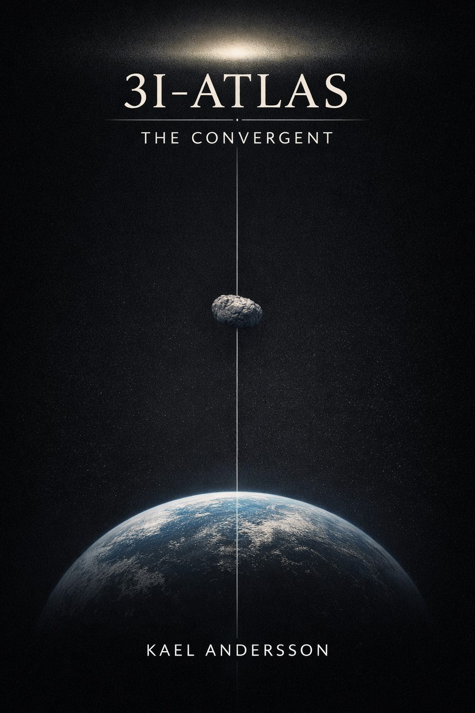

Voyage of the 3I-Atlas
The odyssey begins as the crew answers a signal that blurs science and spirit, setting course for a return none expected.
3I-Atlas: The Lunar Key
A search for hidden lunar frequencies unveils the bridge between awareness and creation — the key forged in Light.
3I-Atlas: The Silence Resonance
The journey turns inward as observation and awareness begin to converge, revealing patterns hidden within the silence between signals.

3I-Atlas: The Convergent
Observation, interpretation, and human response converge as the mystery of 3I-Atlas deepens during its passage through the solar system.